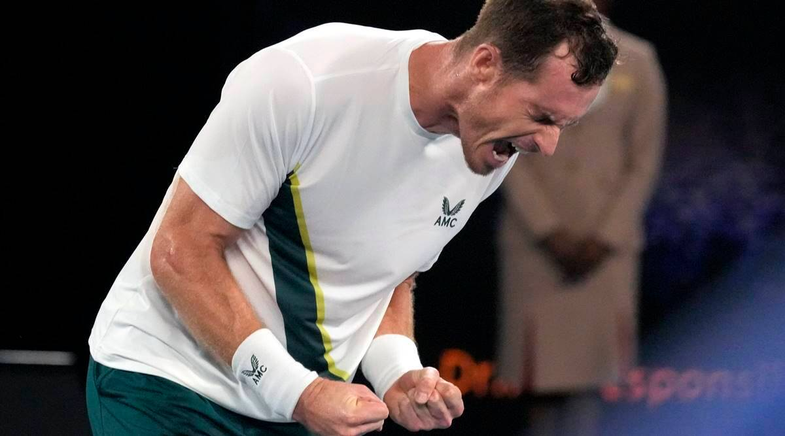
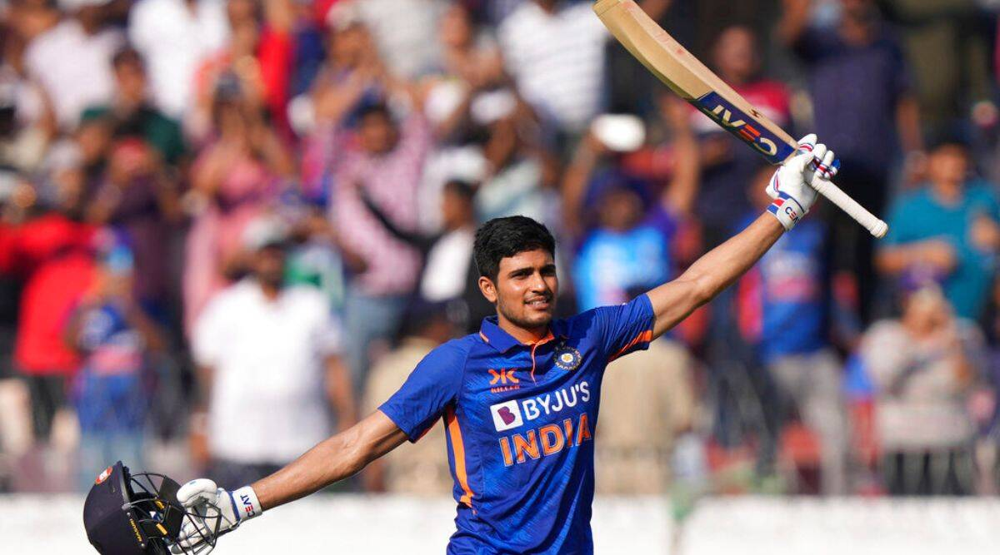

|
|  | Andy Murray grinds down Kokkinakis in late-night epicLast Updated: 16 May, 2023, 20:18 IST
Former world number one Andy Murray produced one of his greatest ever comebacks to sink home hope Thanasi Kokkinakis in a titanic second-round thriller at the Australian Open in the early hours of Friday morning. When Murray finally got the job done in what was his 250th Grand Slam match, the clock was just past 4.05am local time but a sizeable and vociferous crowd had remained glued to their seats inside the Margaret Court Arena. |
|  | ‘The fact that the next best score wasn’t even 40’, ‘Out of the world’, ‘Chabuk’: Indian team reacts to Shubman Gill’s double hundredLast Updated: 16 May, 2023, 11:10 IST
Shubman Gill became only the fifth Indian to score a double hundred on Wednesday in the first ODI against New Zealand in Hyderabad. A knock that propelled India to 349 in the first innings, eventually helping the hosts claim a 12 run win and win him the player of the match award.Former India captain Virat Kohli, also showered high praise for the 23-year-old. |
©2023, All right reserved by Precisenews.com, Designed by: Harsh Tejaniya